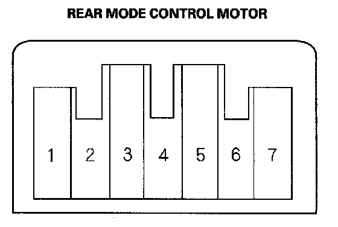

Rear Mode Control Motor Test
Rear Mode Control Motor TestNOTE: Before testing, check for HVAC DTCs.
1. Disconnect the 7P connector from the rear mode control motor.
NOTE: Incorrectly applying power and ground to the rear mode control motor will damage it. Follow the instructions carefully.

2. Connect battery power to the No. 1 terminal of the rear mode control motor, and ground the No. 5 and No. 7 terminals; the rear mode control motor should run smoothly. To avoid damaging the rear mode control motor, do not reverse power and ground. Disconnect the No. 5 or No. 7 terminals from ground; the rear mode control motor should stop at Vent (when the No. 5 terminal is disconnected) or Heat (when the No. 7 terminal is disconnected). Don't cycle the rear mode control motor for a long time.
3. If the rear mode control motor did not run in step 2, remove it, then check the rear mode control linkage and door for smooth movement.
- If the linkage and door move smoothly, replace the rear mode control motor.
- If the linkage or door stick or bind, repair them as needed.